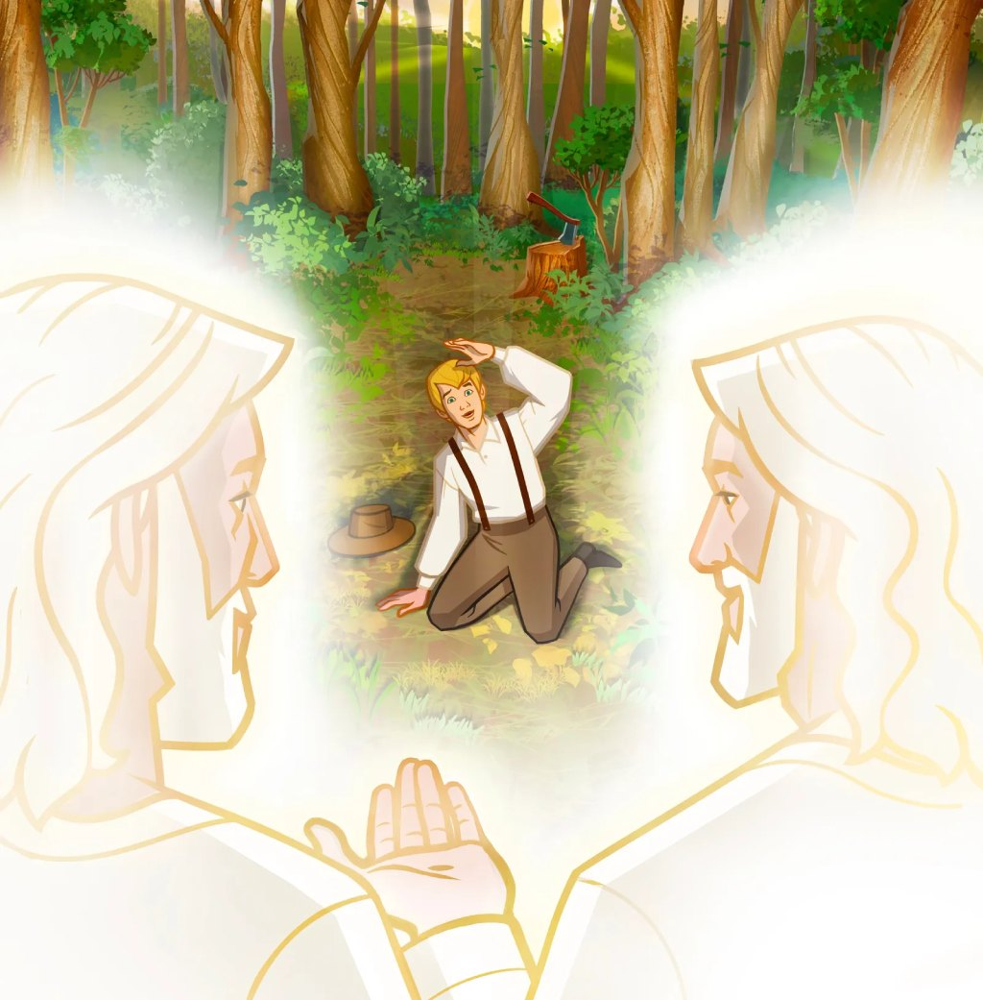
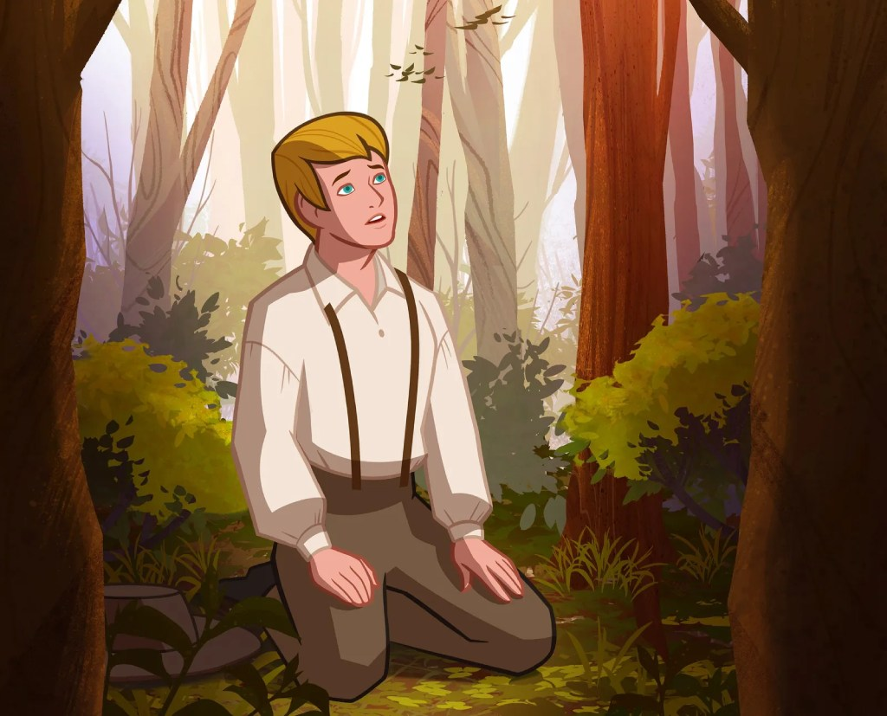

第一章：200年的奇迹
For now, this is just a children's book. I actually would like to attach my testimony, with some beautiful images that suit all ages, have a better structure, and have a lot of words, but I have some problems. First, I don't have enough knowledge in UI/UX design, so it will cost me a lot of time to do this. Second, I need to write a lot of words, but recently I don't have sufficient time for this assignment, but I promise I will finish this website. And maybe the wireframe will be changed in the coming days.
在约瑟·斯密家庭居住的地方，有许多教会教导关于耶稣基督。他们都教导关于祂不同的事。约瑟不确定谁是对的。他知道自己需要救主，但不知道该加入哪一个教会。
约瑟为此想了很久。他希望他的罪能得到宽恕。他造访了许多教会，但还是感到困惑。
有一天，他在读圣经的雅各书1章5节，说到，如果我们需要智慧，可以求问神。约瑟心里知道这是他必须要做的事。

1820年春天一个美丽的早晨，约瑟走进了他家附近的树林中。他希望找到一个可以独自向天父祈祷的地方。

约瑟跪下来开始祈祷，当他这么做时，他感觉到一股邪恶的力量抓住他。他感到黑暗包围着他，似乎有人试图阻止他向神说话。约瑟运用了他所有力气来求神救他。
突然间，约瑟看到一道美丽的亮光从天而降。黑暗离开了，他感到平安。在那道光中，他看见天父和耶稣基督站在空中。天父呼唤约瑟的名字，并指着耶稣说：「这是我的爱子。听祂说！」
耶稣告诉约瑟·斯密，他的罪获得了赦免。约瑟问耶稣，他该加入那一个教会。耶稣说他不应加入他们任何一个教会。
耶稣说有关祂福音的重要真理已经遗失了。祂说祂会差遣天使教导这些真理给约瑟，并与世人分享。
异象结束后，约瑟充满了爱和喜乐。约瑟不再感到困惑。他知道神爱他。虽然有些人因为他说他见过天父和耶稣基督而讨厌他，但约瑟知道这是真实的。